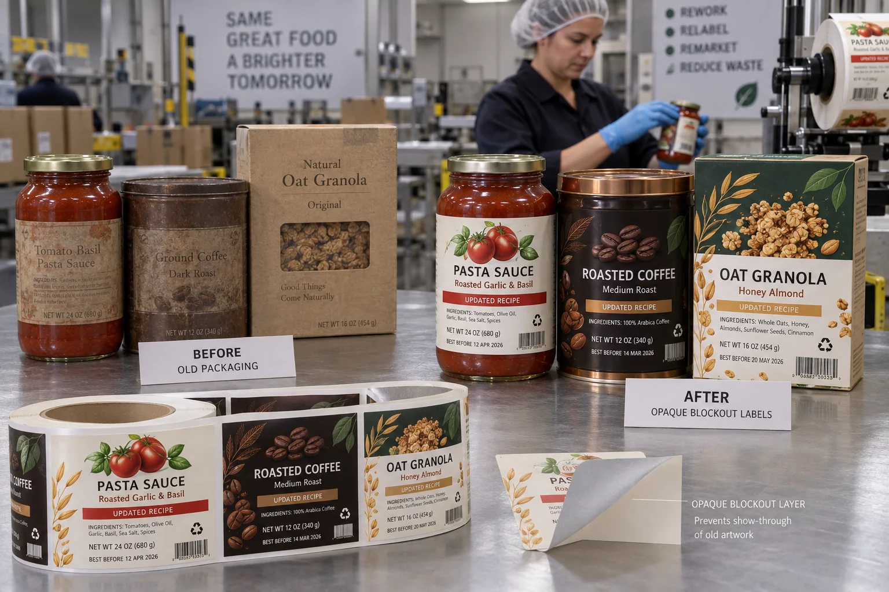

Short answer
Opaque blockout labels hide obsolete graphics, barcodes or text so usable packaging can be corrected without the old information showing through. The construction must provide opacity, adhesion and a clean visual edge on the actual package.
Ordinary white labels are not automatically opaque. Hold one over a black barcode and the bars may remain visible. Under a scanner, even partial show-through can create ambiguity. A correction label needs to be tested as a correction, not approved because it looked white on the roll.
What blockout labels are used to correct
| Change | Main risk | Verification |
|---|---|---|
| Barcode replacement | Old and new codes both scan | Scan from multiple angles and distances |
| Ingredient or warning correction | Old copy remains readable | Visual opacity and legal review |
| Distributor or address update | New patch looks temporary or misaligned | Finished-pack appearance standard |
| Seasonal packaging reuse | Large old graphics show through | Color and opacity sample on production pack |
| Language or market change | Wrong version packed or applied | SKU control and line reconciliation |
A composite barcode correction
This is a composite planning example. A food brand discovers that 18,000 printed pouches carry an old retail barcode. The first solution is a standard white paper label because it is inexpensive and available quickly. On the table it looks acceptable. Under the warehouse scanner, the old dark bars remain faintly visible and one angle reads the wrong code.
My first question used to be “how fast can we print the patch?” The better first question is “what must the patch make impossible?” For barcode correction, the old code must not scan, the new code must scan and the label must remain attached through distribution. Speed matters after those conditions are defined.
How opacity is created
Blockout performance can come from an opaque face stock, a dark or metallic barrier layer, a high-opacity coating, or a combined construction. The correct approach depends on how dark and colorful the original artwork is. A white patch over pale copy needs less hiding power than a pale yellow patch over a black barcode and red promotion panel.
Ask whether the supplied sample is an actual blockout construction or a white label printed with extra ink. Heavy ink can help, but it may not create the same stable barrier and can affect color, drying or scuff resistance.
The old surface becomes the new substrate
When a correction label is applied over an existing label, the adhesive no longer bonds to the bottle or pouch. It bonds to the old label's laminate, varnish, paper or ink. A glossy overlaminate may behave differently from uncoated paper. Powder, oil and dust from storage add another layer of risk.
- Confirm the old label is firmly attached and not already lifting.
- Check whether its edges or embossing telegraph through the patch.
- Use rounded corners where hand application could catch an edge.
- Allow enough margin to cover old information despite placement tolerance.
- Test storage temperature, abrasion and case packing after rework.
Rework labor can exceed label cost
A blockout label may cost only a few cents while the hand application, inspection and inventory control cost much more. Measure how long one operator takes to position the patch correctly, how many packs fit in a shift and what happens to errors. A low-cost label that requires surgical alignment may be the expensive option.
| Rework question | Why it matters |
|---|---|
| Can the patch use an existing edge as a guide? | Reduces placement time and variation |
| Does the old code need complete margin coverage? | Determines patch size and tolerance |
| Will application be manual or automatic? | Controls roll format, gap and dispensing |
| How are corrected units counted? | Prevents mixed inventory |
| Who approves regulatory copy? | Separates print accuracy from legal approval |
Factory-side view
Saving the package is not always saving money
Blockout labels are excellent when the correction is small, the base pack is sound and the rework can be controlled. They are less convincing when half the front panel must be buried under a patch.
If the corrected pack looks like a correction from normal shelf distance, compare a package reprint honestly. The customer will not see the inventory write-off you avoided; they will see the finished pack.
When a blockout label is the wrong tool
Do not use a patch to hide unsafe, damaged or contaminated packaging. Do not assume it resolves legal responsibility for incorrect allergen, nutrition or market information. The responsible brand owner should review the correction method and copy. Large changes, unstable old labels, severe wrinkles or high-speed placement constraints may make new packaging the safer and more economical choice.
Blockout-label quote checklist
- Send the actual printed package or a high-resolution flat sample.
- Mark the exact information that must become unreadable or unscannable.
- Provide the new artwork and required placement tolerance.
- State the old surface material, coating and storage condition.
- Explain manual or automatic application and roll requirements.
- Define inspection, barcode scan and inventory reconciliation.
- Approve a production-material sample on the actual package.
Avery's technical overview of blockout labels illustrates why show-through is a construction issue rather than a simple color choice. For barcode layout, read Barcode and QR Code Labels. For short corrected batches, see Multi-SKU Short-Run Label Printing.
Frequently asked questions
What is an opaque blockout label?
It is a label construction designed to hide the text, color or barcode underneath. Opacity may come from the face material, a barrier layer, printed flood coat or a combination.
Can a white label cover an old barcode?
Not always. Many ordinary white papers and films allow dark bars or color contrast to show through. Use a blockout construction and scan the corrected pack to confirm that only the new barcode is readable.
Can blockout labels be applied over existing labels?
Yes, when the old label is firmly bonded, clean and sufficiently flat. Raised edges, texture, coating, contamination or a loose old label can telegraph through or weaken the new bond.
When is reprinting the package better than relabeling?
Reprinting is often better when the correction area is large, the old surface is unstable, regulatory risk is high, application labor is excessive or the reworked pack would look visibly compromised.
Related label guides
- Digital vs Flexographic Label Printing: Buyer Guide
- Variable Data Labels: QR Codes, Lots and Serial Numbers
- Peel-and-Reseal Labels for Food Packaging
Review the complete label construction
Send the package photos, material, finished label size, quantity by artwork, storage conditions and application method. We can review fit, material and production details before preparing a quote and digital proof.